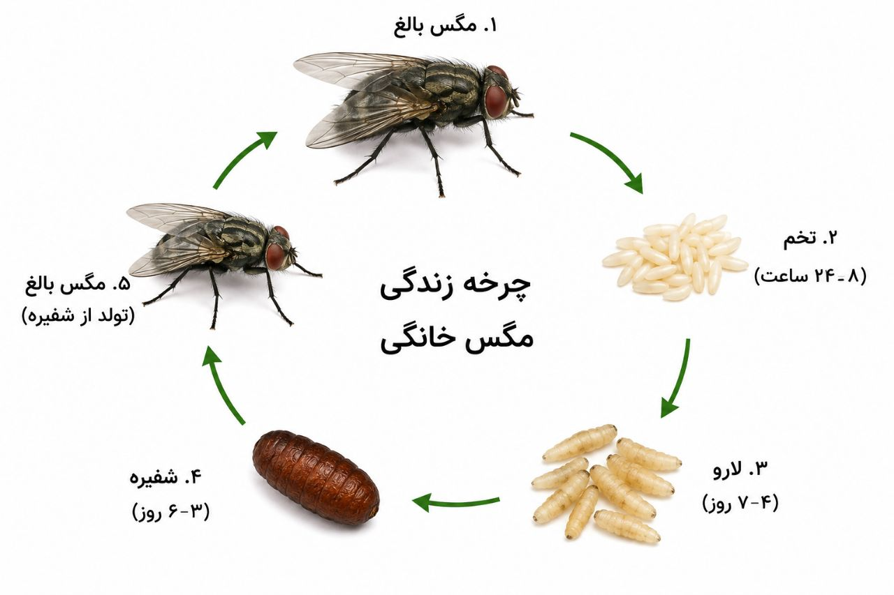
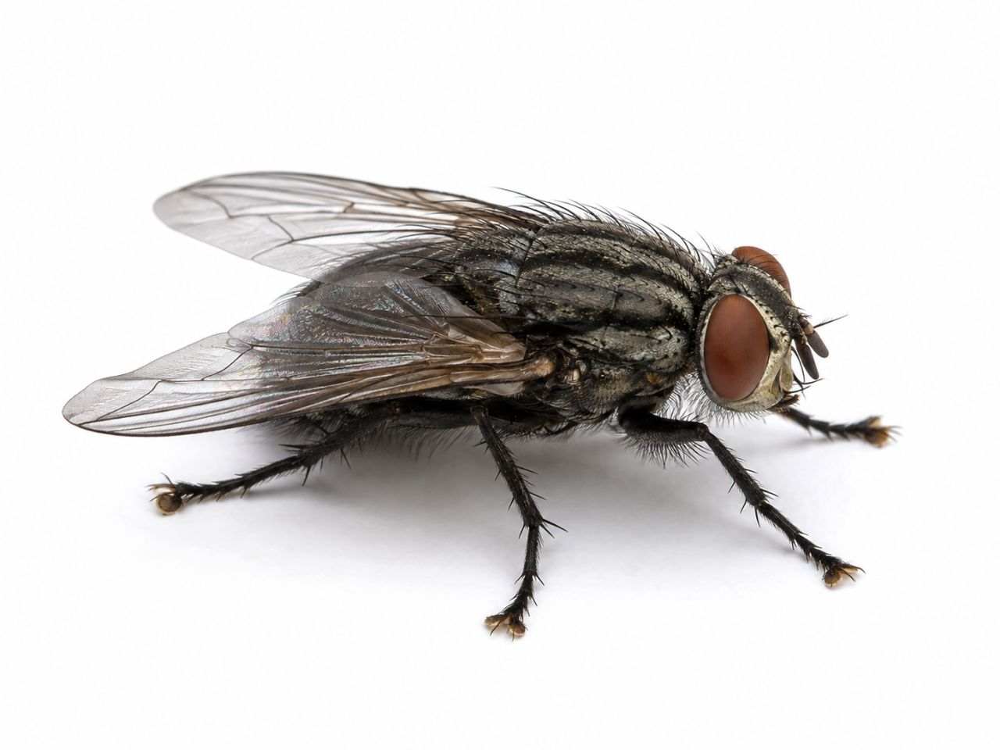
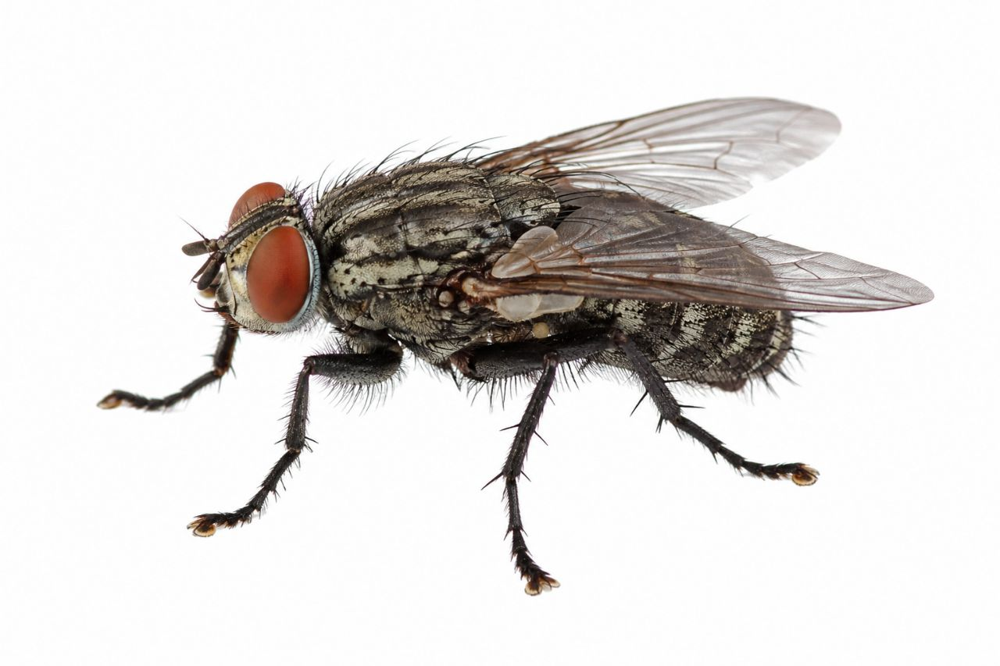
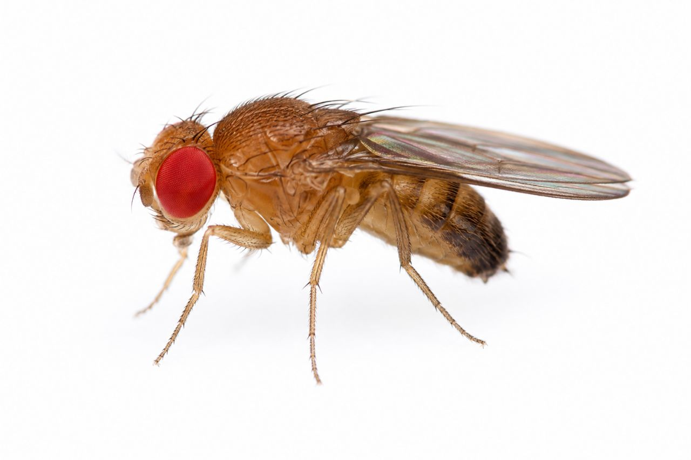
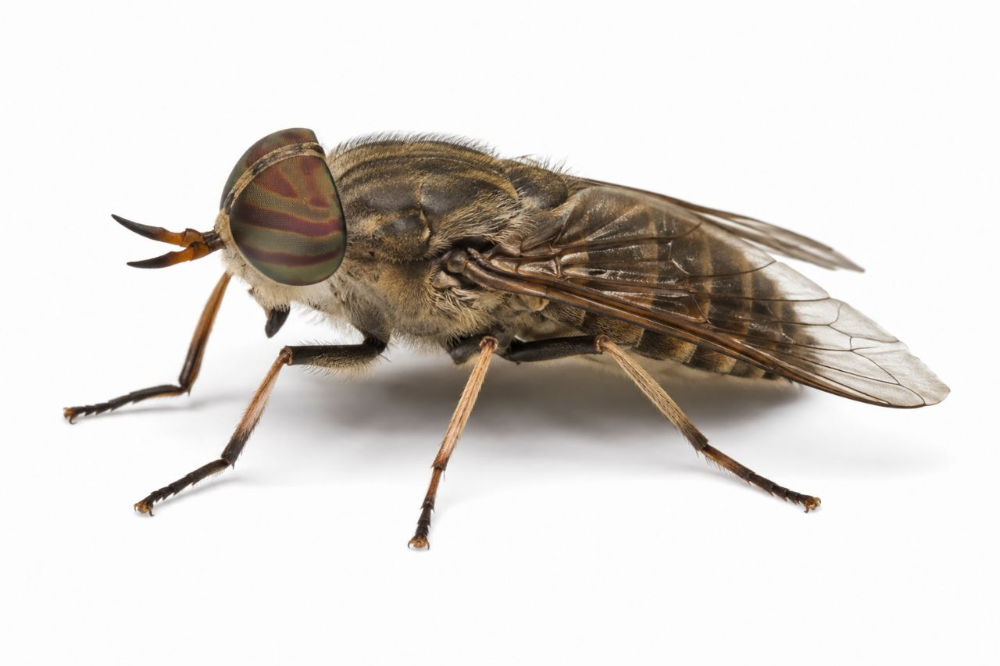

صدای وزوز آزاردهنده، نشستن روی مواد غذایی، انتقال باکتریها و بیماریها... مگسها بدونشک یکی از آزاردهندهترین و در عین حال خطرناکترین آفات محیطهای زندگی انسان هستند. شاید بسیاری از مردم مگس را فقط یک حشرهٔ مزاحم بدانند، اما واقعیت این است که این حشرهٔ کوچک میتواند ناقل دهها بیماری خطرناک باشد و سلامت شما و خانوادهتان را بهطور جدی تهدید کند.
مگسها از قدیمیترین همزیستهای انسان هستند و در هر نقطه از کره زمین که انسان زندگی میکند، مگس نیز حضور دارد. این حشرات با تولید مثل فوقالعاده سریع، میتوانند در کمترین زمان ممکن به یک معضل بزرگ تبدیل شوند. یک جفت مگس در شرایط مناسب، طی چند ماه میتواند میلیونها فرزند تولید کند! این یعنی اگر به موقع اقدام نکنید، خانه یا محل کار شما بهسرعت به یک مرکز پرورش مگس تبدیل میشود.
اما مشکل فقط به آزار و اذیت ختم نمیشود. مگسها ناقل بیماریهای جدی مانند وبا، اسهال خونی، حصبه، سالمونلا، تب حصبه، عفونتهای چشمی و حتی هپاتیت هستند. آنها با نشستن روی مواد غذایی، سطوح آشپزخانه و حتی وسایل شخصی، بیماریها را بهراحتی منتقل میکنند.
در این مقاله جامع و تخصصی، شما را با انواع مگسهای رایج در ایران، بیماریهای ناشی از آنها، روشهای تشخیص و پیشگیری، و مهمتر از همه، روشهای اصولی و تخصصی سمپاشی مگس آشنا میکنیم. اگر شما هم در تهران یا سایر شهرهای ایران از دست مگسها کلافه شدهاید و نگران سلامت خانوادهتان هستید، این مقاله راهنمای کامل شما برای نجات خانه و محل کارتان خواهد بود.
مگسها حشراتی از راسته دوبالان (Diptera) و خانواده Muscidae هستند که بیش از ۱۲۰,۰۰۰ گونه در سراسر جهان شناسایی شدهاند. در ایران نیز دهها گونه مختلف مگس زندگی میکنند که هر کدام ویژگیهای خاص خود را دارند.
| ویژگی | توضیح |
|---|---|
| اندازه | معمولاً بین ۵ تا ۱۰ میلیمتر |
| رنگ | خاکستری، سیاه، آبی، سبز و یا ترکیبی از این رنگها |
| طول عمر | بین ۱۵ تا ۳۰ روز (بسته به گونه و شرایط محیطی) |
| تغذیه | مگسها از مواد آلی در حال پوسیدگی، شیره گیاهان، میوهها، زبالهها و مواد غذایی تغذیه میکنند. |
| تولید مثل | هر مگس ماده تا ۹۰۰ تخم در طول عمر خود میگذارد. |
| دوره رشد | از تخم تا مگس بالغ حدود ۷ تا ۱۰ روز طول میکشد. |

چرخه زندگی مگس شامل چهار مرحله است:




تشخیص زودهنگام وجود مگسها میتواند از تبدیل شدن یک آلودگی کوچک به یک بحران جلوگیری کند. این نشانهها را جدی بگیرید:
مگسها بهعنوان یکی از مهمترین ناقلین مکانیکی بیماریها، سالانه باعث ابتلای میلیونها نفر به بیماریهای مختلف میشوند. آنها با نشستن روی مواد آلوده (زباله، مدفوع، لاشه) و سپس روی مواد غذایی و سطوح، عوامل بیماریزا را منتقل میکنند.
| بیماری | عامل بیماریزا | راه انتقال | علائم اصلی |
|---|---|---|---|
| وبا | باکتری Vibrio cholerae | انتقال مکانیکی توسط مگس | اسهال شدید، استفراغ، کمآبی بدن |
| اسهال خونی | باکتری Shigella | انتقال توسط مگس | اسهال خونی، تب، درد شکم |
| سالمونلا | باکتری Salmonella | انتقال توسط مگس | مسمومیت غذایی، تب، استفراغ |
| حصبه (تب تیفوئید) | باکتری Salmonella typhi | انتقال توسط مگس | تب طولانی، ضعف، سردرد، لکههای پوستی |
| عفونتهای چشمی | باکتریهای مختلف | انتقال با نشستن مگس روی چشم | قرمزی، خارش، ترشح، التهاب |
| هپاتیت | ویروس هپاتیت A و E | انتقال مکانیکی | تب، ضعف، زردی پوست و چشم |
| آلرژی و آسم | مواد آلرژن موجود در بدن مگس | استنشاق ذرات | عطسه، سرفه، تنگی نفس |
| مسمومیت غذایی | باکتریهای مختلف | آلودهسازی مواد غذایی | تهوع، استفراغ، اسهال، درد شکم |
کنترل مگسها نیازمند یک رویکرد جامع و چندمرحلهای است. برای ریشهکنی قطعی، باید از ترکیبی از روشها استفاده کرد. در شرکت سمپاشی نانوفناوران، از روش مدیریت تلفیقی آفات (IPM) برای کنترل مگس استفاده میکنیم که شامل مراحل زیر است:
اولین و مهمترین گام، شناسایی گونه مگس و منابع تولید مثل آنها است. کارشناسان ما با بررسی دقیق محیط، موارد زیر را مشخص میکنند:
بهترین و مؤثرترین راه کنترل مگس، حذف مکانهای تخمگذاری و پرورش آنهاست. اقدامات زیر را جدی بگیرید:
در صورت مشاهده مگس یا آلودگی گسترده، سمپاشی تخصصی توسط کارشناسان انجام میشود:
پس از کاهش جمعیت مگسها، باید با نصب توریهای ریز روی پنجرهها و دریچهها، بستن شکافها و درزها و استفاده از دربهای خودبستهشونده، از ورود مجدد مگسها جلوگیری کرد.
با رعایت این نکات ساده، میتوانید از بازگشت مجدد مگسها جلوگیری کنید:
هزینه سمپاشی مگس به عوامل مختلفی بستگی دارد:
| عامل | تأثیر بر هزینه |
|---|---|
| مساحت و نوع مکان | منازل مسکونی، ویلاها، باغها، رستورانها، هتلها و مراکز صنعتی هزینههای متفاوتی دارند. |
| شدت آلودگی | آلودگی شدید نیاز به عملیات بیشتر و زمانبرتری دارد. |
| نوع روش | مهپاشی، سمپاشی تماسی، طعمهگذاری یا ترکیبی از روشها. |
| دسترسی به نقاط آلوده | در صورت نیاز به سمپاشی سقفهای بلند یا محیطهای بزرگ، هزینه افزایش مییابد. |
| تعداد جلسات | معمولاً یک جلسه کافی است، اما در موارد شدید ممکن است نیاز به بازدید مجدد باشد. |
💡 توصیه: برای دریافت مشاوره رایگان و استعلام دقیق هزینه، با کارشناسان ما تماس بگیرید.
خیر، سموم استفادهشده توسط شرکت نانوفناوران با رعایت کامل استانداردهای بهداشتی انتخاب میشوند. همچنین در هنگام سمپاشی، افراد و حیوانات از محیط خارج میشوند و پس از تهویه کامل، محیط کاملاً ایمن است.
اثر سمپاشی مهپاشی فوری است و مگسهای بالغ بلافاصله از بین میروند. اما برای جلوگیری از تکثیر مجدد، حذف منابع تولید مثل ضروری است.
استفاده از اسپریهای خانگی معمولاً مؤثر نیست و فقط مگسهای سطحی را از بین میبرد. همچنین استفاده نادرست از سموم میتواند برای سلامتی خطرناک باشد. روشهای تخصصی مانند مهپاشی نیاز به تجهیزات و دانش دارد.
بله، معمولاً ۲ تا ۴ ساعت باید محیط را ترک کنید تا سموم تهویه شوند. کارشناسان زمان دقیق را به شما اعلام میکنند.
اگر منابع تولید مثل حذف شوند و نکات پیشگیری رعایت شود، احتمال بازگشت بسیار کم است. شرکت نانوفناوران خدمات خود را با ضمانت ارائه میدهد.
مگسها با وجود کوچکی، یکی از خطرناکترین ناقلین بیماریها در محیطهای زندگی انسان هستند. آنها نهتنها آزاردهندهاند، بلکه میتوانند سلامت شما و خانوادهتان را بهطور جدی تهدید کنند. کنترل و ریشهکنی مگسها نیازمند دانش، تجربه و استفاده از روشهای تخصصی است.
شرکت سمپاشی نانوفناوران با بیش از ۲۰ سال تجربه و استفاده از پیشرفتهترین تجهیزات مهپاشی و سمپاشی، آماده ارائه خدمات تخصصی و تضمینی به شماست. تیم کارشناسان ما با استفاده از سموم استاندارد و روشهای نوین، مگسها را بهطور کامل و قطعی از منزل یا محل کار شما حذف میکنند و محیطی امن، بهداشتی و آرام را برای شما به ارمغان میآورند.
🚀 همین حالا اقدام کنید:
📞 تماس فوری: ۰۹۱۲۰۷۰۵۷۴۶
💬 درخواست مشاوره رایگان: از طریق واتساپ یا ایتا
🔗 مشاهده سایر خدمات: کنترل آفات مسکونی